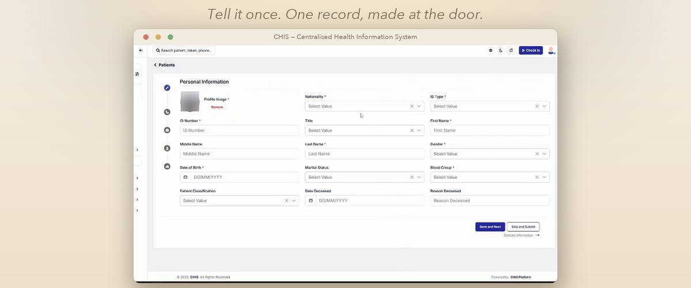
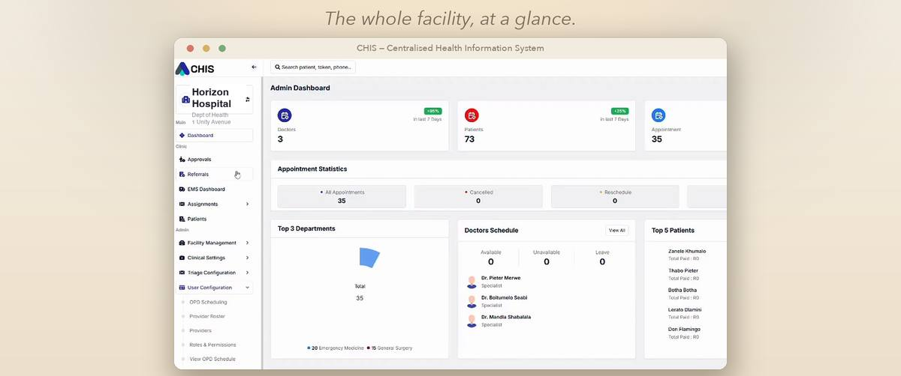
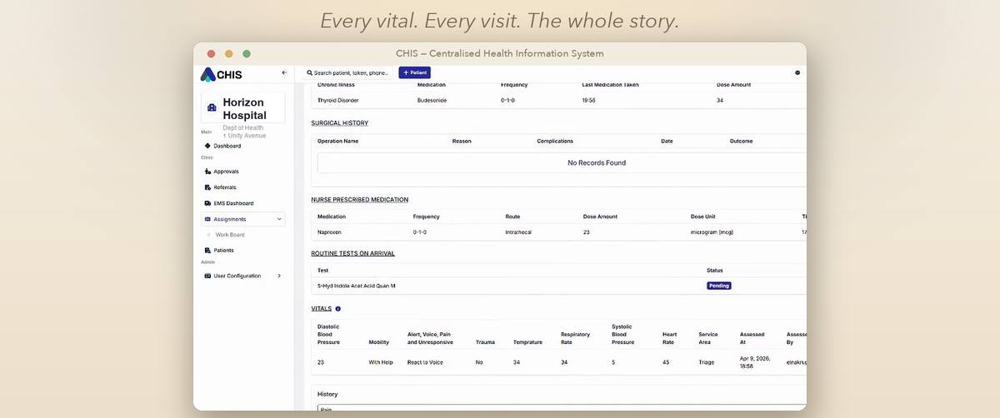
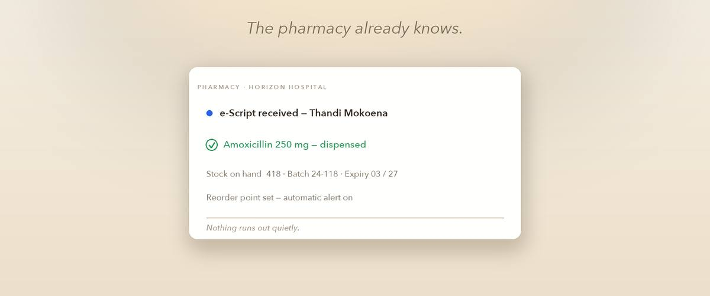
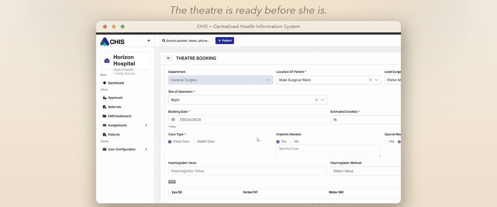
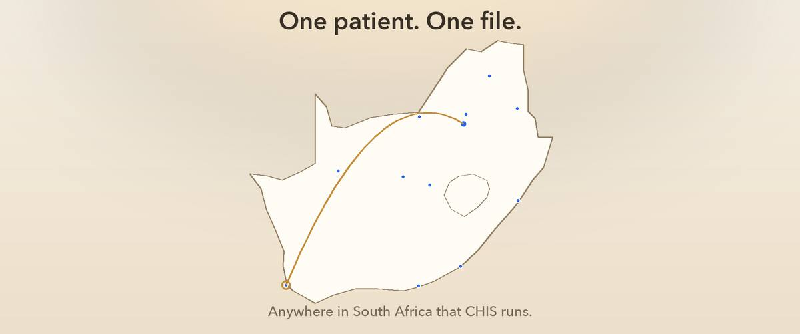

Why it matters
“Somewhere on these shelves, her story waits. Or it doesn’t. So she begins again. Every date. Every dose. From the beginning.”From the C-H-I-S launch film · Never tell your story twice.
One patient. One record. Every facility. C-H-I-S keeps a person’s whole health story safe — so no one has to start it over.
The promise
Every day, health stories are lost in paper — histories retold, tests repeated, folders that never turn up. C-H-I-S replaces the folder with a single living record, made once at the door, that follows the patient through registration, triage, the ward, the pharmacy and the theatre.
The record is created once and cannot go missing from a shelf. Every visit adds to one continuous story.
Consent, observations, medicines and sign-offs are captured with a full audit trail. Defensible in care, and in review.
Clinicians see history, medication, procedures and results at first touch — every vital, every visit.
Why it matters
“Somewhere on these shelves, her story waits. Or it doesn’t. So she begins again. Every date. Every dose. From the beginning.”From the C-H-I-S launch film · Never tell your story twice.
How it works
One continuous record, from the first arrival to every facility after. These are real screens from the system.
A record is created at the door, with consent captured and a unique patient identifier issued. It is told once, and only once.

Live queues, triage priority and nursing dashboards — bed occupancy, vitals, tasks and call alerts at a glance.

Chronic conditions, medication, surgical history, results and vitals — the full longitudinal record, present before the consultation begins.

Prescriptions arrive electronically, dispensing is recorded against the patient, and stock, batch and expiry are tracked so nothing runs out quietly.

Bookings, anaesthetic pre-operative assessment, nursing checklists and surgeon sign-off — surgery as a governed workflow, not a whiteboard.

Referrals carry the record with them. Wherever C-H-I-S runs, the story arrives before the patient does.

Who it serves
Registered once, remembered everywhere C-H-I-S runs. Your history arrives before you sit down, and you decide who may see it.
“Never tell your story twice.”
The whole history at first touch. Less paperwork, fewer repeated tests, and a record that stands behind your clinical decisions.
“The doctor sees the whole story.”
A national-grade platform: NHI-ready, standards-based and procurement-ready, with facility and provincial visibility built in.
“Every action on record.”
Trust & privacy
A national health record has to answer the hard questions before anyone asks them. C-H-I-S is built on consent, auditability and South African data law.
A live demonstration — one patient, one record, across facilities. For provincial departments, hospital groups, schemes and partners.
Prefer email? hello@c-h-i-s.co.za